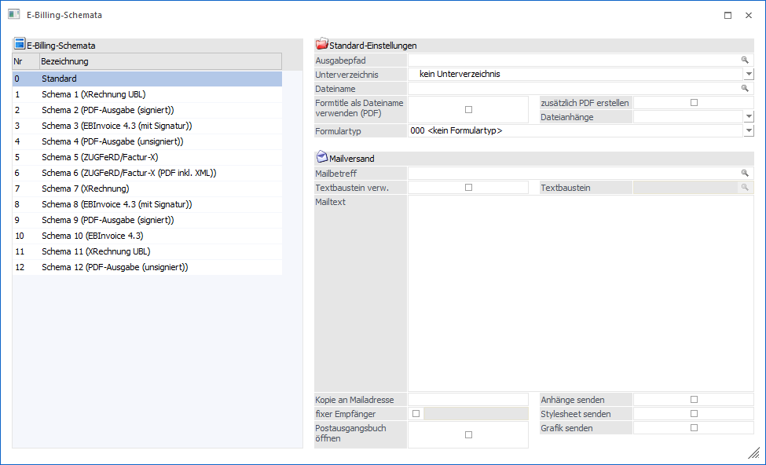
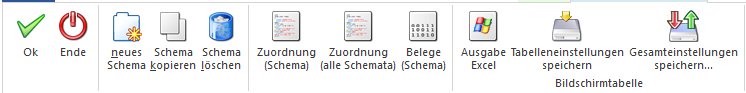
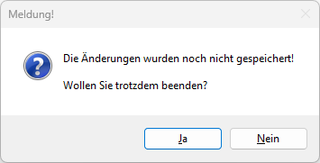
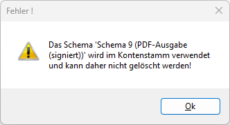

Über den Menüpunkt
1 Stammdaten
1 Belegaustausch
1 E-Billing-Schemata
können die Einstellungen für das E-Billing vorgenommen werden.

Das Fenster ist in zwei Teile geteilt - auf der linken Seite werden alle vorhandenen Schemata angezeigt, auf der rechten Seite sind dann die entsprechenden Einstellungen vorzunehmen. Die Funktionen dazu werden in den nächsten Unterkapiteln beschrieben.
Buttons

Ø OK
Über diesen Button können die Schemata gespeichert werden. Es wird geprüft, ob die Eingaben für alle Schemata in Ordnung sind. Ist dies nicht der Fall, wird das betroffene Schema geladen und der Fokus in das betroffene Feld gesetzt. Es wird u. a. folgendes geprüft:
ü Gültiger Ausgabepfad
ü Mailversand für den Ausgabetyp verfügbar
ü Erstellung eines Zugferd-PDFs nur für Typen mit Exportvorlage (ohne Signatur) verfügbar
ü fixer Empfänger aktiviert und keine Mailadresse eingetragen
ü Textbaustein verwenden aktiviert und kein Textbaustein ausgewählt
Ø Ende
Durch Anklicken des ENDE-Buttons bzw. durch Drücken der ESC-Taste wird das Fenster geschlossen. Sind in der Tabelle noch "grüne" Einträge (geändert aber noch nicht gespeichert) vorhanden, wird eine entsprechende Meldung ausgegeben:

Wird die Meldung mit JA bestätigt, werden alle Änderungen verworfen. Wird die Meldung mit NEIN bestätigt, bleibt das Fenster geöffnet und es können weitere Änderungen durchgeführt, oder die bereits getätigten Änderungen gespeichert werden.
Ø neues Schema
Fügt eine neue Zeile in der Bildschirmtabelle "E-Billing-Schemata" hinzu. Anschließend können die Bezeichnung und die Einstellungen im Schema hinterlegt und anschließend gespeichert werden.
Ø Schema kopieren
Wenn der Focus auf einer Zeile in Tabelle liegt (ausgenommen Zeile "Standard"), dann kann durch Anklicken des Buttons "Schema kopieren" eine Kopie der ausgewählten Zeile erstellt werden. Damit können Schemata einfach erstellt und nur an den notwendigen Stellen abgeändert werden.
Ø Schema löschen
Wenn der Focus auf einer Zeile in Tabelle liegt (ausgenommen Zeile "Standard"), dann kann durch Anklicken des Buttons "Schema löschen" das ausgewählte Schema zum Löschen markiert werden. Dadurch werden die Zeile und die Anzeige auf der rechten Seite rot eingefärbt. Tatsächlich gelöscht wird das Schema erst durch das Speichern (OK-Button). Wenn das Schema bereits bei einem Konto oder einer Belegart hinterlegt ist, wird das Löschen mit einer entsprechenden Meldung abgelehnt.

Ø Zuordnung (Schema)
Wenn dieser Button angewählt wird, wird eine Liste erstellt, in der alle Konten bzw. Belegarten aufgelistet werden, in denen das selektierte Schema hinterlegt ist. Beim Eintrag "Standard" steht diese Funktion nicht zur Verfügung.
Ø Zuordnung (alle Schemata)
Wenn dieser Button angewählt wird, dann wird eine Liste erstellt, wo alle Konten bzw. Belegarten aufgelistet werden, wobei alle Schemata berücksichtigt werden.
Ø Belege (Schema)
Durch Anklicken dieses Buttons wird eine Liste aller Belege ausgegeben, wo das ausgewählte Schema Anwendung findet. Beim Eintrag "Standard" steht diese Funktion nicht zur Verfügung.
Ø Ausgabe Excel
Durch Anwahl des Buttons "Ausgabe Excel" wird der Inhalt der Tabelle an Microsoft Excel übergeben.
Ø Tabelleneinstellungen speichern
Die Spalten einer Tabelle können grundsätzlich an beliebige Positionen verschoben, bzw. in der Breite entsprechend angepasst werden. Durch Anwahl des Buttons "Tabelleneinstellungen speichern" werden die Einstellungen benutzerspezifisch gespeichert und bei dem nächsten Aufruf des Programmpunktes wieder vorgeschlagen.
Ø Gesamteinstellungen speichern
Im Gegensatz zu "Tabelleneinstellungen speichern" können mit "Gesamteinstellungen speichern" mehrere Tabellenaufbauten gespeichert und nach Wunsch geladen werden. Zusätzlich werden Sonderfunktionen der Tabelle (z.B. "Spalte gruppieren") ebenfalls bei der Speicherung bedacht.